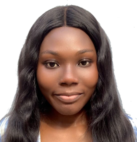
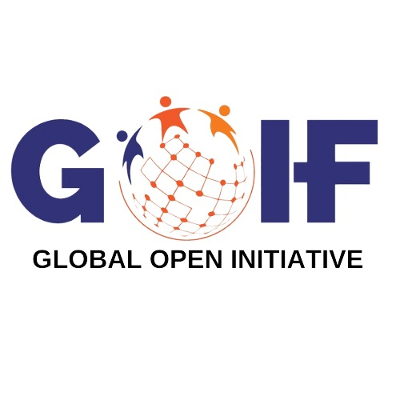
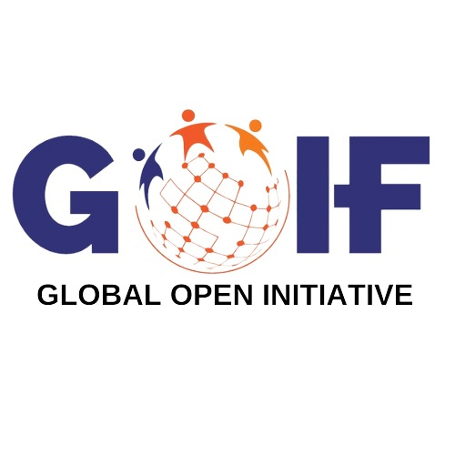

Our Team
Our commited team who have made it possible.
Sabra Asante describes himself as animateur of Accra Linux User Group (currently Linux Accra) and perseveres as a Management Consultant. A Founding member of Linux Accra he has been active for the past 20 years using, teaching and pushing linux, advocating for free and open source (FOSS) software in general and enabling technology uptake wherever possible through FOSS. He believes that past the green and industrial revolutions, as software is a key to the information revolution, the only way for those left behind like Africa is free and open source software.

Rashidatu Ibrahim is a project manager at Open Source Zongo, where she leads initiatives that harness the power of open-source technology to drive social impact. With a background in Chemistry, Project Management, and a deep-rooted passion for tech, she bridges science and innovation to empower underrepresented communities. She is a strong advocate for climate action and women’s empowerment, dedicating her efforts to building inclusive digital tools and sustainable solutions that address real-world challenges. Her tech journey is fueled by a belief in collaboration and accessibility. She has contributed to several open-source projects and played a pivotal role in developing ICT programs that promote digital literacy and bridge the digital divide, especially among women and youth.

Faisal Ali is a passionate digital inclusion advocate, a Wikimedian, translator, and community leader, committed to empowering underrepresented youth through open-source technologies. He is currently the project manager of Open Source Zongo (OSZ), who leads community workshops on open knowledge and digital inclusion to spark innovation in Zongo communities and other underserved communities.

Judith Kyerewaa is a data analyst and social media manager who bridges the gap between storytelling and analytics. With a background in Classics and Philosophy, she applies sharp critical thinking and curiosity to data and digital campaigns. At Open Source Zongo, she is responsible for documenting the digital strategy, creating content that captures student progress, community growth, and partnerships advancing tech education in Zongo communities. Skilled in MySQL, Excel, and Power BI and learning Python, Judith has worked across education, healthcare, and civic data projects. She is always committed to clarity, empathy, and practical solutions. Passionate about representation, lifelong learning, and helping others grow in confidence, especially those just starting out in tech.
Our Partners
 
